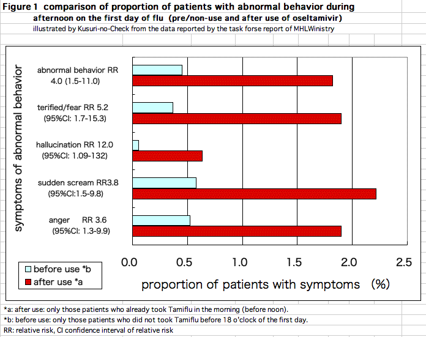
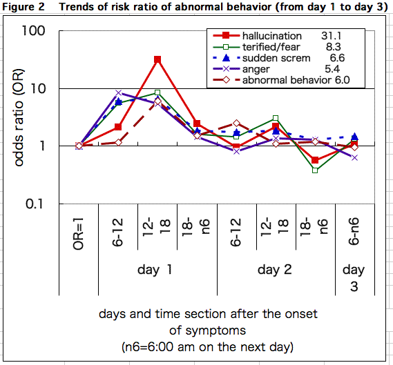
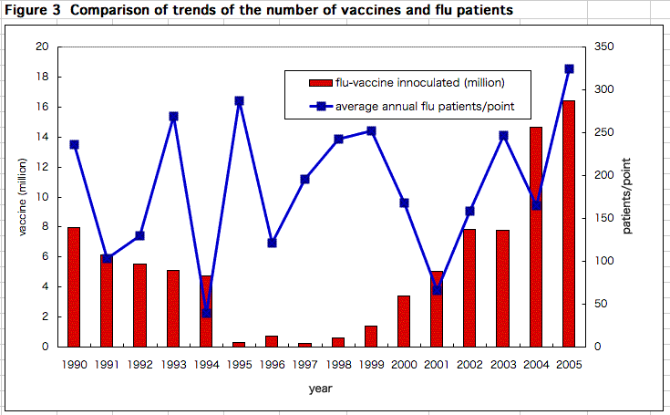

This year's season for influenza has come. Tamiflu (oseltamivir) would be widely used and there would be more victims of its adverse reaction. Ministry of Health, Labour, and Welfare (MHLW) warns of abnormal behavior induced by Tamiflu as a severe adverse reaction (side effect) on a drug package insert. On the other hand, in cases of death due to abnormal behavior and sudden death during sleep, MHLW denies causal relationship between these damages and the drug. At the end of October, 2006, MHLW published a report that concluded there was no relationship between Tamiflu and abnormal behavior[1]. However, "Kusuri-no-check" examined the report and found clear data which indicate the causality[2].
I reported three cases of death caused by Tamiflu at a session of 37th annual scientific meeting of Japanese Society for Pediatric Infectious Diseases in November, 2005[3,4]. MHLW announced in January 2006 that one of the three victims died as a result of "abnormal behavior" and another died of "lowered conscious level".
In addition to these three victims, I received another case of sudden death after the scientific meeting. The families of four victims applied for benefits to "Adverse Health Effect Relief Services: AHERS", their applications were refused. One was recognized as suicide induced by the other drug, and the other case was classified as "causal relation cannot be determined since circumstances from taking the drug to death were unknown". There were two victims of sudden death due to respiratory arrest. One of them, a two-year old boy was recognized as influenza related encephalopathy. And the other, 39-year old male who had been otherwise healthy before taking Tamiflu and died three hours after taking it was not recognized as adverse reaction because he was judged as died of heart failure and the causal relationship with the drug was denied.
The families demanded Pharmaceuticals, Medical Devices Agency (PMDA) to re-examine their applications in late August, 2006. And in late October, the report whose primary objective was to investigate causal relationship between oseltamivir and abnormal behavior was released. It reported that the frequencies of abnormal behavior were not significantly different between patients treated with Tamiflu and those not (yet) treated with Tamiflu.
The report skillfully left a final conclusion pending. In spite of this, the mass media reported "causal relation was denied" because "there was no significant difference". Some TV programs had planned to report danger of abnormal behavior induced by Tamiflu. But after MHLW's report was published, they voluntarily refrained from reporting the danger. If MHLW's report is left as it is, it would be used as evidence to deny the causal relationship in the judgment of "Adverse Health Effect Relief" benefit.
I have been warning of the danger of Tamiflu at scientific societies, on a drug bulletin "Kusuri-no-check", and on the internet. And I am furious at nonsense of the MHLW's report. But I carefully and scientifically analyzed it. To my surprise, data in the report themselves clearly indicated that patients treated with Tamiflu experienced at least several times more cases of abnormal behavior, and several dozens more cases of other adverse reactions (details are reported in "The informed Prescriber" [6,7]).
Based on the data in the report[1], proportions of patients with abnormal behavior during the daytime on the first day of fever is calculated for patients surely treated with Tamiflu (treated cases) and those surely not treated with the drug (pre-treatment and non-treatment cases: pre/non-treatment).
TProportion of patients with abnormal behavior, according to doctor's information, were 0.5% in pre/non-treated cases and 1.8 % in treated cases. "Being terrified/fear" was 0.4% vs 1.9%. "Hallucination" was 0.05% vs 0.6%. "Sudden scream/ delirious speech" was 0.6% vs 2.2%. "Anger" was 0.5% vs 1.9%. All these adverse events were observed much more in Tamiflu-treated cases. The incidence proportions in treated cases were almost four times higher or more (Figure 1).
The denominator (the number of patients treated with Tamiflu and those of pre/non-treatment) and the numerator (the number of events) at the start of Tamiflu treatment are appropriately defined. Figure 2 shows the time trend of ratios that indicates how many times more frequently each symptom of abnormal behavior may appear in treated cases than in pre/non-treatment.
The figure shows that symptoms such as "being terrified/fear", "anger", and "sudden scream" started appearing more frequently in treated cases in the morning on the first day of fever. In the afternoon, ratios of all symptoms increased. It means that they were observed more in treated cases. From the evening till the morning on the second day, the ratio decreased. In the afternoon on the second day, the ratio slightly increased, but the ratios for most symptoms went to 1. It means that the symptoms almost disappeared from the evening on the second day till the third day.
In the afternoon on the first day, patients treated with Tamiflu experienced more abnormal behaviors: about 4 to 5 times more "anger", about 4 to 7 times more "sudden scream" and "abnormal behavior based on information from doctors", about 5 to 6 times more "fear", and about 12 to 31 times more "hallucination". This analysis clearly suggests that the onset of neuropsychiatric adverse reactions concentrates on the afternoon on the first day. This tendency, as explained later on, surely coincides with U.S. Food and Drug Agency's (FDA) analysis based on cases reported from Japan.
Unlike MHLW's observation, FDA's analysis that was disclosed on 16th November 2006[7-9] is far more clear-cut. It pointed out the following facts as evidence for possible relationship between abnormal behavior and Tamiflu
FDA stated that "there is uncertain evidence to definitively state that this is a disease-only process and an adequate postmarketing data suggesting an association between the use of oseltamivir the development of neuropsychiatric events." Therefore, "we are concerned that when/if the use oft his drug increases in the U.S. to be in the realm of the current Japanese use of this drug, there may be increasing cases of adverse consequence in the U.S. as well. Therefore, it would be prudent to update the U.S. labeling to be similar in scope with the current Japanese labeling regarding neuropsychiatric adverse events. In particular, we want to alert the clinician/patient/patient's guardian to closely monitor the patient in order to abort any attempt at unsafe behavior (i.e. suicide attempts)."
FDA seems to have taken the case very seriously, and that led it to announce such comment.
FDA did not include sudden death of infant in the warning this time, but mentioned that its causal relationship with Tamiflu could not be ruled out in November 2005.
FDA said "It is concerning that six young patients died suddenly within one to two days after initiation of oseltamivir therapy. These patients, five males and one female between the ages of two and four years were healthy, had no underlying disease prior to developing influenza." "Although these reports do not allow us to assess causality of oseltamivir, the contribution of the drug to the death of these patients, especially with the cases of sudden death and cardio-pulmonary arrest, cannot be excluded based upon the information available."
Several dozens of cases have been reported for sudden death during sleep after taking Tamiflu. Several life threatening but survived cases have also been reported [9-11]. A junior high school student (now a high school student), whose parents I interviewed in detail, had abnormal behavior, respiratory arrest, cyanosis, and a convulsion. Since he vomited after the first administration of Tamiflu, he probably did not absorb the drug. However an hour after taking the second dose, he lost his consciousness and had a convulsion. He was admitted but the next day afternoon he completely recovered [11].
Also, a ten-month old girl had generalized weakness after taking Tamiflu. Her physical and mental development had been normal until the event. She almost had respiratory arrest, lost consciousness, and had a convulsion. Two hours later, her consciousness recovered, and she seemed to have no abnormality. However, it was later found that she could not talk or stand up holding onto something any more as she used to do. She is now four years old and needs full assistance [11].
Sudden death due to respiratory arrest induced by Tamiflu is unpredictable. When a patient has respiratory arrest, even if someone notices it and tries to take him/her to hospital, she/he may have a cardiac arrest on the way. Sudden death is even more problematic than abnormal behavior. It is possible to closely monitor abnormal behavior. If a patient tries to rush out into the street, his/her family can hold and stop him/her. However, for cardiac arrest from respiratory arrest, there is not much the family can do, besides mouth-to-mouth resuscitation and heart massage. In the worst case, pound the pit of the stomach with a fist. Once oxygen is provided, a heartbeat may comeback.
If Tamiflu is dangerous, then many people would ask ﾔwhat about vaccination?' In fact, in hospitals, nursing homes, and even air companies are practically forcing their staffs to receive influenza vaccination. However, there is no evidence that vaccination is effective at all, but the results of unreliable clinical trials and studies that cannot be even called clinical trial.
Influenza vaccination has been proven ineffective in a large-sale study by Medical Association of Maebashi-city, Gunma, whose members were suspicious of its effectiveness. The study vaccinated elementary and junior high school students (these age groups can be most easily immunized), and found that it was not effective. This is not because the vaccine accidentally did not match the type of that season's influenza. Even if it had matched, it would still be ineffective.
It is known that an antibody produced by influenza vaccination does not prevent infection. Then, how the vaccination can be "effective", as some experts argue? They insist that it would prevent flu from getting serious. However, the vaccination has been proven ineffective with tens of thousands of school children. And how could it prevent 80% of elderly flu patients' deaths?
Before vaccination, a doctor asks a person whether he/she has fever, or has had any illness recently. Therefore, in other words, comparing elderly persons who "received" vaccination and those who "did not" means comparing those who are "healthy enough" for vaccination and those who are "ill". This type of comparison largely depends on health condition of the subjects, and proves nothing for the effectiveness of the vaccination itself. To study "effectiveness" properly, people with similar conditions (health state, age etc.) should be divided into a group with vaccination and one with no vaccination.
There is no relationship between the number of vaccines inoculated and of the average total number of flu patients surveyed at specific points all over Japan (Figure 3). Anyway, flu vaccination is not effective. It is not only a waste of money, but also is harmful. Some medical professionals at institutes where vaccination is recommended for staffs say this winter's vaccination may especially be more harmful, and this is now under investigation. It is better to avoid vaccination.
What should we do?
When influenza prevails, you are at risk of getting influenza. Having a nutritious and balanced diet and enough rest and sleep would be the only effective ways to prevent infection and prevent worsening of flu. Generally, personal hygiene is of course important, but preventive effect of gargling and hand-washing is not scientifically proven. You should be careful not to let the body, nose and throat become cold on an unexpectedly cold day. A cold in summer may often caused by too much air cooling.
When you have a cold or flu, keep yourself warm (especially nose and throat), and get a good rest and sleep. If you are unable to sleep soundly, it is enough to close your eyes and just lie down. Some might say "I'm too busy to get rest". This is well understandable. But the worst thing you can do is to keep working when you are sick, depending on antipyretics and Tamiflu.
No vaccination, No antipyretics, and No Tamiflu for flu! Let's take rest.